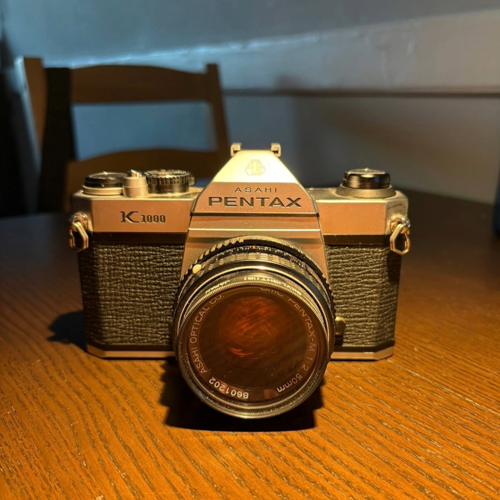

Jareline Quiroz
Something personal about me is that I recently got into film photography. Professionally, I am an industrial and interaction deisgn major minoring in information management and technology. And something peculiar is that I fractured my left toe while playing soccer when I was younger.
